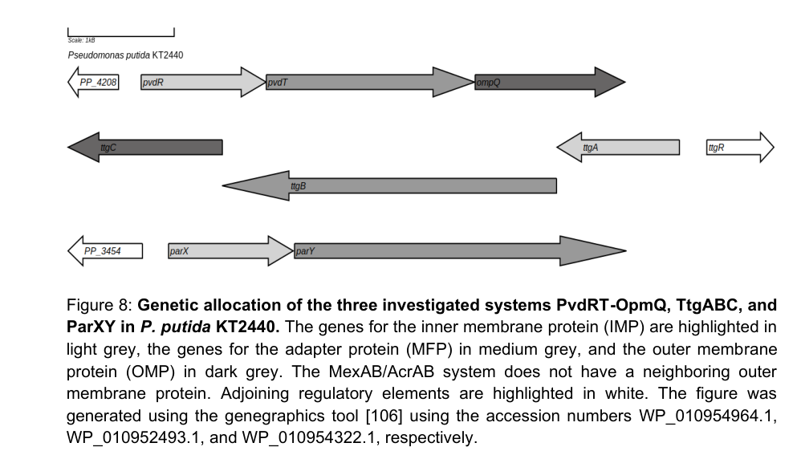

pvdT encodes the ATP-binding/permease component of the PvdRT-OpmQ tripartite pyoverdine export system. PvdT is an inner-membrane ABC transporter component that binds pyoverdine and hydrolyzes ATP to drive secretion and recycling of the siderophore pyoverdine, supporting iron acquisition under iron-limited conditions.
| GO Term | Evidence | Action | Reason |
|---|---|---|---|
|
GO:0005524
ATP binding
|
IEA
GO_REF:0000002 |
KEEP AS NON CORE |
Summary: ATP binding is required for the ABC transporter ATPase, but ATP hydrolysis is the more informative function.
Reason: Retain as non-core nucleotide binding.
Supporting Evidence:
file:PSEPK/pvdT/pvdT-uniprot.txt
KM=0.164 mM for ATP
|
|
GO:0005886
plasma membrane
|
IEA
GO_REF:0000120 |
ACCEPT |
Summary: PvdT is an inner/cell membrane multi-pass transporter component; GOA uses plasma membrane for bacterial cell membrane.
Reason: Retain the location annotation.
Supporting Evidence:
file:PSEPK/pvdT/pvdT-uniprot.txt
SUBCELLULAR LOCATION: Cell inner membrane
file:PSEPK/pvdT/pvdT-deep-research-falcon.md
Inner membrane (as the ABC ATPase/TMD component of the tripartite system spanning inner membrane
|
|
GO:0016020
membrane
|
IEA
GO_REF:0000002 |
MARK AS OVER ANNOTATED |
Summary: Generic membrane is less informative than the retained plasma/cell membrane annotation.
Reason: Retain GO:0005886 instead.
Supporting Evidence:
file:PSEPK/pvdT/pvdT-uniprot.txt
SUBCELLULAR LOCATION: Cell inner membrane
|
|
GO:0016887
ATP hydrolysis activity
|
IEA
GO_REF:0000002 |
ACCEPT |
Summary: ATP hydrolysis is the directly assayed energy-coupling activity of PvdT. Purified PvdT was shown biochemically to possess ATPase activity (PMID:36807028), and falcon deep research confirms PvdT is the ATP-hydrolyzing inner-membrane component of the PvdRT-OpmQ exporter.
Reason: Retain as a core molecular-function annotation directly supported by biochemical assay of purified PvdT.
Supporting Evidence:
file:PSEPK/pvdT/pvdT-uniprot.txt
This subunit binds PVD and drives
file:PSEPK/pvdT/pvdT-uniprot.txt
its secretion by hydrolyzing ATP
PMID:36807028
We show that PvdT possesses an ATPase activity that is stimulated by the addition of PvdR
file:PSEPK/pvdT/pvdT-deep-research-falcon.md
PvdT is an ATP-hydrolyzing component consistent with an ABC exporter
|
|
GO:0022857
transmembrane transporter activity
|
IEA
GO_REF:0000120 |
ACCEPT |
Summary: PvdT is the ATP-binding/permease component of a pyoverdine export system, so transporter activity is supported.
Reason: Retain until a pyoverdine-specific transporter GO term is available in the review.
Supporting Evidence:
file:PSEPK/pvdT/pvdT-uniprot.txt
Part of the tripartite efflux system PvdRT-OpmQ required for
file:PSEPK/pvdT/pvdT-uniprot.txt
the secretion into the extracellular milieu of the siderophore
file:PSEPK/pvdT/pvdT-deep-research-falcon.md
pyoverdine as the relevant substrate/ligand for the PvdT-containing complex
|
|
GO:0042626
ATPase-coupled transmembrane transporter activity
|
IC
PMID:36807028 The ABC transporter family efflux pump PvdRT-OpmQ of Pseudom... |
NEW |
Summary: PvdT is the ATPase/permease component of the PvdRT-OpmQ export system and contributes to ATPase-coupled pyoverdine transport.
Reason: This term is more specific than generic transmembrane transporter activity while avoiding the overclaim that PvdT alone performs the full tripartite export reaction.
Supporting Evidence:
file:PSEPK/pvdT/pvdT-uniprot.txt
This subunit binds PVD and drives
PMID:36807028
PvdT possesses an ATPase activity that is stimulated by the addition of PvdR
file:PSEPK/pvdT/pvdT-deep-research-falcon.md
PvdT is the inner-membrane ABC (MacB-like) ATPase/permease component
file:PSEPK/pvdT/pvdT-deep-research-falcon.md
energizes export by ATP hydrolysis and forms a functional complex with the periplasmic adaptor
|
|
GO:0055085
transmembrane transport
|
IEA
GO_REF:0000108 |
ACCEPT |
Summary: PvdT participates directly in transmembrane export of pyoverdine. Genetic disruption of pvdRT-opmQ reduces pyoverdine in the medium (PMID:30346656), and falcon deep research frames the system as mediating secretion of newly synthesized and recycled pyoverdine.
Reason: Retain the process annotation.
Supporting Evidence:
file:PSEPK/pvdT/pvdT-uniprot.txt
responsible for export of newly synthesized PVD after the final steps
PMID:30346656
Deletion of pvdRT-opmQ leads to reduced amounts of pyoverdine in the medium and decreased growth under iron limitation
file:PSEPK/pvdT/pvdT-deep-research-falcon.md
secretion of newly synthesized and recycled pyoverdine
|
|
GO:1902495
transmembrane transporter complex
|
IEA
GO_REF:0000117 |
ACCEPT |
Summary: PvdT is part of the tripartite PvdRT-OpmQ transporter complex, working with the periplasmic adaptor PvdR and outer-membrane channel OpmQ.
Reason: Retain the complex annotation.
Supporting Evidence:
file:PSEPK/pvdT/pvdT-uniprot.txt
composed of an inner membrane component with both ATPase and permease
file:PSEPK/pvdT/pvdT-deep-research-falcon.md
energizes export by ATP hydrolysis and forms a functional complex with the periplasmic adaptor
|
|
GO:0005886
plasma membrane
|
EXP
PMID:36807028 The ABC transporter family efflux pump PvdRT-OpmQ of Pseudom... |
ACCEPT |
Summary: PvdT is an inner/cell membrane multi-pass transporter component; GOA uses plasma membrane for bacterial cell membrane. Inner-membrane localization was directly determined for purified PvdT (PMID:36807028).
Reason: Retain the location annotation; experimentally supported subcellular localization.
Supporting Evidence:
file:PSEPK/pvdT/pvdT-uniprot.txt
SUBCELLULAR LOCATION: Cell inner membrane
|
Q: Does PvdT directly determine pyoverdine substrate specificity, or is substrate recognition mainly imposed by PvdR/OpmQ or other pyoverdine pathway components?
Suggested experts: Pseudomonas siderophore transport experts
Experiment: Reconstitute PvdRT-OpmQ variants with ATPase-dead PvdT and PvdR-interaction mutants, then measure pyoverdine binding, ATP hydrolysis, and export in iron-limited cells or proteoliposomes.
Type: transporter reconstitution and secretion assay
The research report should be a detailed narrative explaining the function, biological processes, and localization of the gene product. Citations should be given for all claims.
You should prioritize authoritative reviews and primary scientific literature when conducting research. You can supplement
this with annotations you find in gene/protein databases, but these can be outdated or inaccurate.
We are specifically interested in the primary function of the gene - for enzymes, what reaction is catalyzed, and what is the substrate specificity? For transporters, what is the substrate? For structural proteins or adapters, what is the broader structural role? For signaling molecules, what is the role in the pathway.
We are interested in where in or outside the cell the gene product carries out its function.
We are also interested in the signaling or biochemical pathways in which the gene functions. We are less interested in broad pleiotropic effects, except where these elucidate the precise role.
Include evidence where possible. We are interested in both experimental evidence as well as inference from structure, evolution, or bioinformatic analysis. Precise studies should be prioritized over high-throughput, where available.
The evidence gathered here pertains specifically to Pseudomonas putida KT2440 and to the PvdRT–OpmQ tripartite efflux pump implicated in pyoverdine (PVD) secretion/recycling, in which PvdT is the inner-membrane ABC (MacB-like) ATPase/permease component. This matches the UniProt-provided identity context for Q88F88 (pvdT/PP_4210) as a MacB-like ABC transporter subunit involved in pyoverdine export. (stein2023navigatingpyoverdineand pages 29-31, stein2023therndefflux pages 1-2)
Pyoverdine is a high-affinity siderophore used by fluorescent pseudomonads to acquire iron under iron-limiting conditions. After iron capture and uptake, the siderophore can be re-exported for reuse (“recycling”), enabling repeated iron-scavenging cycles. A recent authoritative review summarizes this recycling logic for Pseudomonas pyoverdines, in which the siderophore is not chemically modified during iron release and is directed back to an efflux pump for export. (schalk2025bacterialsiderophoresdiversity pages 46-46)
Tripartite efflux pumps in Gram-negative bacteria span the inner membrane, periplasm, and outer membrane, consisting of an inner-membrane transporter, a periplasmic adaptor protein, and an outer-membrane channel. In P. putida KT2440, the ABC-type tripartite pump PvdRT–OpmQ is described as a transporter responsible for secretion of newly synthesized and recycled pyoverdine. (stein2023therndefflux pages 1-2)
Within this system, PvdT is identified as the inner-membrane ABC ATPase component (MacB-like architecture) that energizes export by ATP hydrolysis and forms a functional complex with the periplasmic adaptor PvdR (and the outer-membrane channel OpmQ for full tripartite transport). (stein2023navigatingpyoverdineand pages 29-31, stein2023navigatingpyoverdineand pages 43-46)
Multiple sources in the retrieved corpus explicitly frame PvdRT–OpmQ as mediating pyoverdine secretion, including both “newly synthesized” and “recycled” pyoverdine in P. putida KT2440. (stein2023therndefflux pages 1-2)
Biochemical experiments described in a 2023 dissertation provide direct interaction/ligand evidence consistent with pyoverdine as the relevant substrate/ligand for the PvdT-containing complex. Specifically, pyoverdine affected ATPase kinetics and strengthened interaction parameters between the inner-membrane component (PvdT) and adaptor protein (PvdR), consistent with substrate-stabilized assembly and/or coupling. (stein2023navigatingpyoverdineand pages 46-49)
PvdT is an inner-membrane component of the PvdRT–OpmQ exporter; together with PvdR (periplasmic adaptor) and OpmQ (outer-membrane channel), the complex supports export to the extracellular milieu. This is visually summarized in schematic models of efflux-pump organization and pyoverdine secretion networks in KT2440. (stein2023navigatingpyoverdineand pages 29-31, stein2023navigatingpyoverdineand media 41401d62, stein2023navigatingpyoverdineand media 1c3e68be)
A key recent biochemical result is quantitative ATPase characterization showing that complex formation and pyoverdine presence measurably alter catalytic parameters:
Interpreting these results at the functional-annotation level: (i) PvdT is an ATP-hydrolyzing component consistent with an ABC exporter; (ii) adaptor complexation changes ATPase behavior; and (iii) pyoverdine can modulate these parameters, consistent with it being a cognate ligand/substrate that couples to complex assembly and/or transport activity. (stein2023navigatingpyoverdineand pages 46-49)
Deletion/inactivation evidence indicates PvdRT–OpmQ is important but not unique for pyoverdine export:
A 2023 KT2440-focused body of work reports biochemical interaction evidence between the PvdRT–OpmQ system and pyoverdine and provides quantitative ATPase kinetics (above), supporting a substrate-coupled transporter model for PvdT within this exporter. (stein2023navigatingpyoverdineand pages 46-49, stein2023navigatingpyoverdineand pages 43-46)
A 2023 peer-reviewed study (Microbiology Spectrum) frames pyoverdine export as a property of overlapping efflux systems, and emphasizes that phenotypes can be masked unless multiple exporters are perturbed—important context for annotation and for experimental design (e.g., interpreting partial secretion phenotypes). (stein2023therndefflux pages 1-2)
A 2024 review highlights that secretion mechanisms remain incompletely understood across organisms and argues for deeper genetic and mechanistic study of siderophore synthesis/secretion genes as a route to applications across agriculture, medicine, and environmental contexts. (xie2024exploringthebiological pages 13-15)
Direct “productized” deployments specifically requiring P. putida PvdT are not established in the retrieved corpus; however, pyoverdine/siderophore production and (by implication) effective export are repeatedly positioned as enabling technologies in multiple domains:
Because export is required to place siderophores in the extracellular environment, PvdT-mediated function is best understood as an upstream enabler of these siderophore-dependent phenomena (iron capture, competition, and siderophore-based technologies), even when PvdT is not named in application papers. (stein2023therndefflux pages 1-2, stein2023navigatingpyoverdineand pages 22-25)
Gene: pvdT (PP_4210; UniProt Q88F88)
Recommended functional name: Pyoverdine export ATP-binding/permease protein PvdT (inner-membrane ABC/MacB-like subunit of PvdRT–OpmQ)
Primary function: ATP-dependent component of a tripartite exporter required for efficient secretion/export and recycling of pyoverdine in P. putida KT2440. (stein2023therndefflux pages 1-2, stein2023navigatingpyoverdineand pages 29-31)
Substrate (best supported): Pyoverdine (siderophore), supported by biochemical modulation of ATPase kinetics by pyoverdine and complex stabilization effects. (stein2023navigatingpyoverdineand pages 46-49)
Cellular localization: Inner membrane (as the ABC ATPase/TMD component of the tripartite system spanning inner membrane → periplasm (PvdR) → outer membrane (OpmQ)). (stein2023navigatingpyoverdineand pages 29-31, stein2023navigatingpyoverdineand media 41401d62)
Pathway role: Siderophore secretion/export and recycling within pyoverdine-mediated iron acquisition; contributes substantially but redundantly (overlapping with other efflux systems). (stein2023therndefflux pages 1-2, stein2023navigatingpyoverdineand pages 29-31)
| Source (first author, year) | Publication type | Organism/strain | What it says about PvdT/PvdRT-OpmQ (function/substrate/localization) | Key quantitative data | URL/DOI |
|---|---|---|---|---|---|
| Stein, 2023 | Dissertation | Pseudomonas putida KT2440 | Identifies PvdT as the inner-membrane ABC ATPase component of the tripartite exporter PvdRT-OpmQ. The system is described as a MacB-like/ABC tripartite exporter involved in export and recycling of the siderophore pyoverdine; PvdT works with periplasmic adapter PvdR and outer-membrane channel OpmQ to move substrate to the exterior. Biochemical interaction data support pyoverdine as a ligand/substrate and support PvdT-PvdR complex formation. Deletion phenotypes are consistent with a major but non-exclusive role in pyoverdine secretion. (stein2023navigatingpyoverdineand pages 46-49, stein2023navigatingpyoverdineand pages 29-31, stein2023navigatingpyoverdineand pages 43-46, stein2023navigatingpyoverdineand pages 49-52) | Deletion of PvdRT-OpmQ reduces pyoverdine secretion by ~50–60%; purification yielded 0.2–0.4 mg PvdR/PvdT from 45 mg total membrane protein. ATPase kinetics reported for PvdT and PvdRT with/without pyoverdine: PvdT Vmax 9.91, KM 0.16 mM, kcat 0.08 s-1, kcat/KM 583.6 M-1 s-1; PvdRT Vmax 69.97, KM 2.58 mM, kcat 0.58 s-1, kcat/KM 214.2 M-1 s-1; PvdT+pyoverdine Vmax 6.43, KM 0.06 mM, kcat 0.05 s-1, kcat/KM 955.9 M-1 s-1; PvdRT+pyoverdine Vmax 40.41, KM 1.30 mM, kcat 0.34 s-1, kcat/KM 241.7 M-1 s-1. (stein2023navigatingpyoverdineand pages 46-49, stein2023navigatingpyoverdineand pages 29-31, stein2023navigatingpyoverdineand pages 43-46) | https://doi.org/10.5282/edoc.32605 |
| Stein, 2023 | Peer-reviewed research article (Microbiology Spectrum) | Pseudomonas putida KT2440 | States that the ABC-type tripartite efflux system PvdRT-OpmQ mediates secretion of newly synthesized and recycled pyoverdine. Loss of these systems impairs pyoverdine secretion and growth under iron limitation, but effects are partial because of redundancy with other tripartite exporters such as MdtABC-OpmB and ParXY. The excerpt does not resolve subunit-level localization beyond the general tripartite architecture spanning inner membrane, periplasm, and outer membrane. (stein2023therndefflux pages 15-16, stein2023therndefflux pages 1-2) | No PvdT-specific kinetic or binding values in the available snippet; qualitative evidence indicates impaired secretion and iron-limited growth upon inactivation of relevant systems, with partial redundancy. (stein2023therndefflux pages 15-16, stein2023therndefflux pages 1-2) | https://doi.org/10.1128/spectrum.02300-23 |
Table: This table summarizes the source-backed evidence available in context for PvdT/PvdRT-OpmQ in Pseudomonas putida KT2440. It highlights what each source supports about transporter function, substrate, localization, and any quantitative data useful for functional annotation.
A 2023 FEBS Letters primary article on purification/initial characterization of PvdRT–OpmQ in KT2440 is referenced within the retrieved corpus but was not directly obtainable in this run; thus, the report relies on the 2023 dissertation’s quantitative biochemical data and a 2023 peer-reviewed study’s contextual and genetic claims for KT2440, plus recent high-authority reviews for broader pathway synthesis. (stein2023therndefflux pages 15-16, stein2023navigatingpyoverdineand pages 46-49, schalk2025bacterialsiderophoresdiversity pages 46-46)
References
(stein2023navigatingpyoverdineand pages 29-31): Nicola Victoria Maria Stein. Navigating pyoverdine and beyond: the role of tripartite efflux pumps in pseudomonas putida kt2440. Dissertation, Jan 2023. URL: https://doi.org/10.5282/edoc.32605, doi:10.5282/edoc.32605. This article has 1 citations.
(stein2023therndefflux pages 1-2): Nicola Victoria Stein, Michelle Eder, Fabienne Burr, Sarah Stoss, Lorenz Holzner, Hans-Henning Kunz, and Heinrich Jung. The rnd efflux system parxy affects siderophore secretion in pseudomonas putida kt2440. Dec 2023. URL: https://doi.org/10.1128/spectrum.02300-23, doi:10.1128/spectrum.02300-23. This article has 8 citations and is from a domain leading peer-reviewed journal.
(schalk2025bacterialsiderophoresdiversity pages 46-46): Isabelle J. Schalk. Bacterial siderophores: diversity, uptake pathways and applications. Nature reviews. Microbiology, 23:24-40, Sep 2025. URL: https://doi.org/10.1038/s41579-024-01090-6, doi:10.1038/s41579-024-01090-6. This article has 211 citations.
(stein2023navigatingpyoverdineand pages 43-46): Nicola Victoria Maria Stein. Navigating pyoverdine and beyond: the role of tripartite efflux pumps in pseudomonas putida kt2440. Dissertation, Jan 2023. URL: https://doi.org/10.5282/edoc.32605, doi:10.5282/edoc.32605. This article has 1 citations.
(stein2023navigatingpyoverdineand pages 46-49): Nicola Victoria Maria Stein. Navigating pyoverdine and beyond: the role of tripartite efflux pumps in pseudomonas putida kt2440. Dissertation, Jan 2023. URL: https://doi.org/10.5282/edoc.32605, doi:10.5282/edoc.32605. This article has 1 citations.
(stein2023navigatingpyoverdineand media 41401d62): Nicola Victoria Maria Stein. Navigating pyoverdine and beyond: the role of tripartite efflux pumps in pseudomonas putida kt2440. Dissertation, Jan 2023. URL: https://doi.org/10.5282/edoc.32605, doi:10.5282/edoc.32605. This article has 1 citations.
(stein2023navigatingpyoverdineand media 1c3e68be): Nicola Victoria Maria Stein. Navigating pyoverdine and beyond: the role of tripartite efflux pumps in pseudomonas putida kt2440. Dissertation, Jan 2023. URL: https://doi.org/10.5282/edoc.32605, doi:10.5282/edoc.32605. This article has 1 citations.
(xie2024exploringthebiological pages 13-15): Benkang Xie, Xinpei Wei, Chu Wan, Wei Zhao, Renfeng Song, Shuquan Xin, and Kai Song. Exploring the biological pathways of siderophores and their multidisciplinary applications: a comprehensive review. Molecules, 29:2318, May 2024. URL: https://doi.org/10.3390/molecules29102318, doi:10.3390/molecules29102318. This article has 75 citations.
(stein2023navigatingpyoverdineand pages 22-25): Nicola Victoria Maria Stein. Navigating pyoverdine and beyond: the role of tripartite efflux pumps in pseudomonas putida kt2440. Dissertation, Jan 2023. URL: https://doi.org/10.5282/edoc.32605, doi:10.5282/edoc.32605. This article has 1 citations.
(schalk2025bacterialsiderophoresdiversity pages 12-14): Isabelle J. Schalk. Bacterial siderophores: diversity, uptake pathways and applications. Nature reviews. Microbiology, 23:24-40, Sep 2025. URL: https://doi.org/10.1038/s41579-024-01090-6, doi:10.1038/s41579-024-01090-6. This article has 211 citations.
(schalk2025bacterialsiderophoresdiversity pages 38-42): Isabelle J. Schalk. Bacterial siderophores: diversity, uptake pathways and applications. Nature reviews. Microbiology, 23:24-40, Sep 2025. URL: https://doi.org/10.1038/s41579-024-01090-6, doi:10.1038/s41579-024-01090-6. This article has 211 citations.
(xie2024exploringthebiological pages 15-17): Benkang Xie, Xinpei Wei, Chu Wan, Wei Zhao, Renfeng Song, Shuquan Xin, and Kai Song. Exploring the biological pathways of siderophores and their multidisciplinary applications: a comprehensive review. Molecules, 29:2318, May 2024. URL: https://doi.org/10.3390/molecules29102318, doi:10.3390/molecules29102318. This article has 75 citations.
(stein2023navigatingpyoverdineand pages 49-52): Nicola Victoria Maria Stein. Navigating pyoverdine and beyond: the role of tripartite efflux pumps in pseudomonas putida kt2440. Dissertation, Jan 2023. URL: https://doi.org/10.5282/edoc.32605, doi:10.5282/edoc.32605. This article has 1 citations.
(stein2023therndefflux pages 15-16): Nicola Victoria Stein, Michelle Eder, Fabienne Burr, Sarah Stoss, Lorenz Holzner, Hans-Henning Kunz, and Heinrich Jung. The rnd efflux system parxy affects siderophore secretion in pseudomonas putida kt2440. Dec 2023. URL: https://doi.org/10.1128/spectrum.02300-23, doi:10.1128/spectrum.02300-23. This article has 8 citations and is from a domain leading peer-reviewed journal.

id: Q88F88
gene_symbol: pvdT
product_type: PROTEIN
status: DRAFT
taxon:
id: NCBITaxon:160488
label: Pseudomonas putida (strain ATCC 47054 / DSM 6125 / CFBP 8728 / NCIMB 11950 / KT2440)
description: pvdT encodes the ATP-binding/permease component of the PvdRT-OpmQ tripartite
pyoverdine export system. PvdT is an inner-membrane ABC transporter component that binds
pyoverdine and hydrolyzes ATP to drive secretion and recycling of the siderophore pyoverdine,
supporting iron acquisition under iron-limited conditions.
existing_annotations:
- term:
id: GO:0005524
label: ATP binding
evidence_type: IEA
original_reference_id: GO_REF:0000002
review:
summary: ATP binding is required for the ABC transporter ATPase, but ATP hydrolysis is
the more informative function.
action: KEEP_AS_NON_CORE
reason: Retain as non-core nucleotide binding.
supported_by:
- reference_id: file:PSEPK/pvdT/pvdT-uniprot.txt
supporting_text: KM=0.164 mM for ATP
- term:
id: GO:0005886
label: plasma membrane
evidence_type: IEA
original_reference_id: GO_REF:0000120
review:
summary: PvdT is an inner/cell membrane multi-pass transporter component; GOA uses plasma
membrane for bacterial cell membrane.
action: ACCEPT
reason: Retain the location annotation.
supported_by:
- reference_id: file:PSEPK/pvdT/pvdT-uniprot.txt
supporting_text: 'SUBCELLULAR LOCATION: Cell inner membrane'
- reference_id: file:PSEPK/pvdT/pvdT-deep-research-falcon.md
supporting_text: Inner membrane (as the ABC ATPase/TMD component of the tripartite
system spanning inner membrane
reference_section_type: OTHER
- term:
id: GO:0016020
label: membrane
evidence_type: IEA
original_reference_id: GO_REF:0000002
review:
summary: Generic membrane is less informative than the retained plasma/cell membrane annotation.
action: MARK_AS_OVER_ANNOTATED
reason: Retain GO:0005886 instead.
supported_by:
- reference_id: file:PSEPK/pvdT/pvdT-uniprot.txt
supporting_text: 'SUBCELLULAR LOCATION: Cell inner membrane'
- term:
id: GO:0016887
label: ATP hydrolysis activity
evidence_type: IEA
original_reference_id: GO_REF:0000002
review:
summary: ATP hydrolysis is the directly assayed energy-coupling activity of PvdT.
Purified PvdT was shown biochemically to possess ATPase activity (PMID:36807028),
and falcon deep research confirms PvdT is the ATP-hydrolyzing inner-membrane component
of the PvdRT-OpmQ exporter.
action: ACCEPT
reason: Retain as a core molecular-function annotation directly supported by biochemical
assay of purified PvdT.
supported_by:
- reference_id: file:PSEPK/pvdT/pvdT-uniprot.txt
supporting_text: This subunit binds PVD and drives
- reference_id: file:PSEPK/pvdT/pvdT-uniprot.txt
supporting_text: its secretion by hydrolyzing ATP
- reference_id: PMID:36807028
supporting_text: We show that PvdT possesses an ATPase activity that is stimulated
by the addition of PvdR
reference_section_type: ABSTRACT
- reference_id: file:PSEPK/pvdT/pvdT-deep-research-falcon.md
supporting_text: PvdT is an ATP-hydrolyzing component consistent with an ABC exporter
reference_section_type: OTHER
- term:
id: GO:0022857
label: transmembrane transporter activity
evidence_type: IEA
original_reference_id: GO_REF:0000120
review:
summary: PvdT is the ATP-binding/permease component of a pyoverdine export system, so
transporter activity is supported.
action: ACCEPT
reason: Retain until a pyoverdine-specific transporter GO term is available in the review.
supported_by:
- reference_id: file:PSEPK/pvdT/pvdT-uniprot.txt
supporting_text: Part of the tripartite efflux system PvdRT-OpmQ required for
- reference_id: file:PSEPK/pvdT/pvdT-uniprot.txt
supporting_text: the secretion into the extracellular milieu of the siderophore
- reference_id: file:PSEPK/pvdT/pvdT-deep-research-falcon.md
supporting_text: pyoverdine as the relevant substrate/ligand for the PvdT-containing
complex
reference_section_type: OTHER
- term:
id: GO:0042626
label: ATPase-coupled transmembrane transporter activity
qualifier: contributes_to
evidence_type: IC
original_reference_id: PMID:36807028
review:
summary: PvdT is the ATPase/permease component of the PvdRT-OpmQ export system and
contributes to ATPase-coupled pyoverdine transport.
action: NEW
reason: This term is more specific than generic transmembrane transporter activity while
avoiding the overclaim that PvdT alone performs the full tripartite export reaction.
supported_by:
- reference_id: file:PSEPK/pvdT/pvdT-uniprot.txt
supporting_text: This subunit binds PVD and drives
- reference_id: PMID:36807028
supporting_text: PvdT possesses an ATPase activity that is stimulated by the addition
of PvdR
reference_section_type: ABSTRACT
- reference_id: file:PSEPK/pvdT/pvdT-deep-research-falcon.md
supporting_text: PvdT is the inner-membrane ABC (MacB-like) ATPase/permease component
reference_section_type: OTHER
- reference_id: file:PSEPK/pvdT/pvdT-deep-research-falcon.md
supporting_text: energizes export by ATP hydrolysis and forms a functional complex
with the periplasmic adaptor
reference_section_type: OTHER
- term:
id: GO:0055085
label: transmembrane transport
evidence_type: IEA
original_reference_id: GO_REF:0000108
review:
summary: PvdT participates directly in transmembrane export of pyoverdine. Genetic
disruption of pvdRT-opmQ reduces pyoverdine in the medium (PMID:30346656), and falcon
deep research frames the system as mediating secretion of newly synthesized and
recycled pyoverdine.
action: ACCEPT
reason: Retain the process annotation.
supported_by:
- reference_id: file:PSEPK/pvdT/pvdT-uniprot.txt
supporting_text: responsible for export of newly synthesized PVD after the final steps
- reference_id: PMID:30346656
supporting_text: Deletion of pvdRT-opmQ leads to reduced amounts of pyoverdine in
the medium and decreased growth under iron limitation
reference_section_type: ABSTRACT
- reference_id: file:PSEPK/pvdT/pvdT-deep-research-falcon.md
supporting_text: secretion of newly synthesized and recycled pyoverdine
reference_section_type: OTHER
- term:
id: GO:1902495
label: transmembrane transporter complex
evidence_type: IEA
original_reference_id: GO_REF:0000117
review:
summary: PvdT is part of the tripartite PvdRT-OpmQ transporter complex, working with
the periplasmic adaptor PvdR and outer-membrane channel OpmQ.
action: ACCEPT
reason: Retain the complex annotation.
supported_by:
- reference_id: file:PSEPK/pvdT/pvdT-uniprot.txt
supporting_text: composed of an inner membrane component with both ATPase and permease
- reference_id: file:PSEPK/pvdT/pvdT-deep-research-falcon.md
supporting_text: energizes export by ATP hydrolysis and forms a functional complex
with the periplasmic adaptor
reference_section_type: OTHER
- term:
id: GO:0005886
label: plasma membrane
evidence_type: EXP
original_reference_id: PMID:36807028
review:
summary: PvdT is an inner/cell membrane multi-pass transporter component; GOA uses plasma
membrane for bacterial cell membrane. Inner-membrane localization was directly determined
for purified PvdT (PMID:36807028).
action: ACCEPT
reason: Retain the location annotation; experimentally supported subcellular localization.
supported_by:
- reference_id: file:PSEPK/pvdT/pvdT-uniprot.txt
supporting_text: 'SUBCELLULAR LOCATION: Cell inner membrane'
references:
- id: GO_REF:0000002
title: Gene Ontology annotation through association of InterPro records with GO terms.
findings:
- statement: InterPro2GO supplies domain/family-based automated annotations that require
review against the gene-specific UniProt and literature context.
- id: file:PSEPK/pvdT/pvdT-uniprot.txt
title: UniProtKB reviewed entry for pvdT
findings:
- statement: UniProt identifies PvdT as the ATP-binding/permease subunit of the PvdRT-OpmQ
pyoverdine export system, with ATPase activity and inner-membrane localization.
supporting_text: This subunit binds PVD and drives
reference_section_type: OTHER
- statement: PvdT is also implicated in recycling of pyoverdine after ferri-PVD internalization
and iron release in the periplasm.
supporting_text: is also responsible for recycling of PVD after internalization of
reference_section_type: OTHER
- id: GO_REF:0000120
title: Combined automated GO annotation using multiple IEA methods.
findings:
- statement: Combined automated methods provide provisional GO annotations that require
gene-level review.
- id: GO_REF:0000108
title: Gene Ontology annotation based on Ensembl/UniProtKB orthology or projection pipelines.
findings:
- statement: Automated projection supplies broad transport/process annotations that need
curator review for substrate and mechanism specificity.
- id: GO_REF:0000117
title: Electronic Gene Ontology annotations created by ARBA machine learning models.
findings:
- statement: ARBA supplies automated annotations that are useful but must be checked against
direct gene evidence.
- id: PMID:36807028
title: 'The ABC transporter family efflux pump PvdRT-OpmQ of Pseudomonas putida KT2440:
purification and initial characterization.'
findings:
- statement: Biochemical characterization shows PvdT ATPase activity, stimulation by PvdR,
and interaction with pyoverdine.
supporting_text: We show that PvdT possesses an ATPase activity that is stimulated by
the addition of PvdR
reference_section_type: ABSTRACT
- statement: PvdT and PvdR were purified as the inner-membrane and periplasmic-adapter
components of the system, with first direct evidence of pyoverdine interaction.
supporting_text: purified and characterized the inner membrane component PvdT and the
periplasmic adapter protein PvdR
reference_section_type: ABSTRACT
- id: PMID:30346656
title: PvdRT-OpmQ and MdtABC-OpmB efflux systems are involved in pyoverdine secretion in
Pseudomonas putida KT2440.
findings:
- statement: Genetic evidence links PvdRT-OpmQ to pyoverdine secretion and iron-limited
growth.
supporting_text: Deletion of pvdRT-opmQ leads to reduced amounts of pyoverdine in the
medium and decreased growth under iron limitation
reference_section_type: ABSTRACT
- statement: Expression of the pvdRT-opmQ system is induced by iron limitation, consistent
with a role in siderophore-mediated iron acquisition.
supporting_text: Expression from the respective promoters is stimulated by iron limitation
reference_section_type: ABSTRACT
- id: file:PSEPK/pvdT/pvdT-deep-research-falcon.md
title: Falcon deep research report for pvdT (Q88F88, PP_4210) in Pseudomonas putida KT2440
findings:
- statement: PvdT is the inner-membrane ABC (MacB-like) ATPase/permease component of the
tripartite PvdRT-OpmQ pyoverdine efflux pump.
supporting_text: PvdT is the inner-membrane ABC (MacB-like) ATPase/permease component
reference_section_type: OTHER
- statement: PvdT energizes pyoverdine export by ATP hydrolysis and assembles with the
periplasmic adaptor PvdR (and outer-membrane channel OpmQ) into a functional complex.
supporting_text: energizes export by ATP hydrolysis and forms a functional complex with
the periplasmic adaptor
reference_section_type: OTHER
- statement: Pyoverdine is the cognate substrate/ligand for the PvdT-containing complex,
supported by biochemical modulation of ATPase kinetics.
supporting_text: pyoverdine as the relevant substrate/ligand for the PvdT-containing complex
reference_section_type: OTHER
- statement: The PvdRT-OpmQ system mediates secretion of both newly synthesized and recycled
pyoverdine.
supporting_text: secretion of newly synthesized and recycled pyoverdine
reference_section_type: OTHER
- statement: PvdT localizes to the inner membrane as the ABC ATPase/TMD component of the
tripartite system spanning inner membrane to periplasm to outer membrane.
supporting_text: Inner membrane (as the ABC ATPase/TMD component of the tripartite system
spanning inner membrane
reference_section_type: OTHER
- statement: PvdRT-OpmQ contributes substantially but redundantly to pyoverdine export;
deletion reduces but does not abolish secretion due to overlapping efflux systems.
supporting_text: consistent with a major role in export/recycling
reference_section_type: OTHER
core_functions:
- description: PvdT is the inner-membrane ATP-binding/permease component of the PvdRT-OpmQ
pyoverdine export system, hydrolyzing ATP to drive pyoverdine secretion and recycling.
molecular_function:
id: GO:0016887
label: ATP hydrolysis activity
contributes_to_molecular_function:
id: GO:0042626
label: ATPase-coupled transmembrane transporter activity
directly_involved_in:
- id: GO:0055085
label: transmembrane transport
locations:
- id: GO:0005886
label: plasma membrane
in_complex:
id: GO:1902495
label: transmembrane transporter complex
supported_by:
- reference_id: file:PSEPK/pvdT/pvdT-uniprot.txt
supporting_text: Part of the tripartite efflux system PvdRT-OpmQ required for
- reference_id: file:PSEPK/pvdT/pvdT-uniprot.txt
supporting_text: This subunit binds PVD and drives
- reference_id: file:PSEPK/pvdT/pvdT-uniprot.txt
supporting_text: its secretion by hydrolyzing ATP
- reference_id: PMID:36807028
supporting_text: PvdT possesses an ATPase activity that is stimulated by the addition
of PvdR
reference_section_type: ABSTRACT
- reference_id: file:PSEPK/pvdT/pvdT-deep-research-falcon.md
supporting_text: PvdT is the inner-membrane ABC (MacB-like) ATPase/permease component
reference_section_type: OTHER
- reference_id: file:PSEPK/pvdT/pvdT-deep-research-falcon.md
supporting_text: ATP-dependent component of a tripartite exporter required for efficient
secretion/export and recycling of pyoverdine
reference_section_type: OTHER
proposed_new_terms: []
suggested_questions:
- question: Does PvdT directly determine pyoverdine substrate specificity, or is substrate
recognition mainly imposed by PvdR/OpmQ or other pyoverdine pathway components?
experts:
- Pseudomonas siderophore transport experts
suggested_experiments:
- description: Reconstitute PvdRT-OpmQ variants with ATPase-dead PvdT and PvdR-interaction
mutants, then measure pyoverdine binding, ATP hydrolysis, and export in iron-limited
cells or proteoliposomes.
experiment_type: transporter reconstitution and secretion assay
{kind=link}